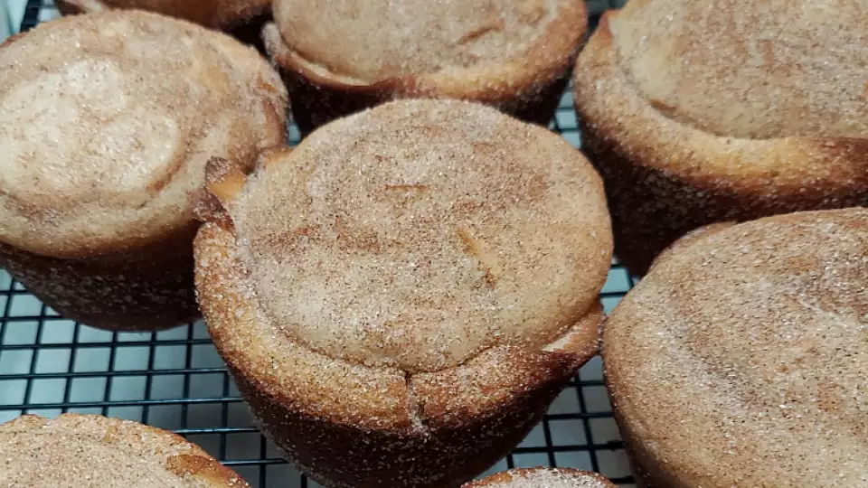

Mouth-Watering Doughnut Muffins

Description
This recipe requires about 10 minutes of prep time, and 20 minutes of baking time bringing the total time estimate for this recipe to about 30 minutes.
If followed correctly this recipe will yield 12 servings of scrumptious Doughnut Muffins! So without further ado let's get started!
Ingredients you will need for this recipe:
- 1/3 cup shortening
- 1 cup white sugar
- 1 egg
- 1 1/2 cups all-purpose flour
- 1 1/2 teaspoons baking powder
- 1/2 teaspoon salt
- 1/4 teaspoon ground cinnamon
- 1/2 cup milk
- 1/2 cup white sugar
- 1 teaspoon ground cinnamon
Steps for baking:
- Preheat oven to 375 degrees F. Grease muffin cups or line with paper muffin liners.
- In a large bowl, cream together shortening and 1 cup sugar; beat in egg. Stir together flour, baking powder, salt and 1/4 teaspoon cinnamon. Stir flour into egg mixture alternately with milk. Spoon batter into prepared muffin cups.
- Bake in preheated oven for 20 minutes, or until a toothpick inserted into center of a muffin comes out clean. While muffins bake, combine 1/2 cup sugar and 1 teaspoon cinnamon. Remove muffins from pan and let cool for 5 minutes. While muffins are still warm, roll tops of muffins in cinnamon sugar mixture.
- Enjoy!
This recipe was found on this awesome site.